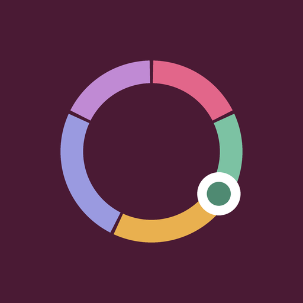

Cycle Cue
A cycle companion for partners. Cycle Cue shows where she is in her month, what her body is likely going through, and practical ways to support her, with gentle reminders before the harder days.
Support
Questions, feedback or a problem with the app? Email jcreatives1x@gmail.com. We reply within a few days.
Common questions
Where is my data stored? Only on your phone. Cycle Cue has no accounts and sends nothing to a server.
Can I use the dates for birth control? No. Predictions assume a regular cycle and are not reliable as contraception.
Reminders aren't arriving. Check that notifications are allowed for Cycle Cue in your phone's settings, then toggle the reminder off and on in the app.